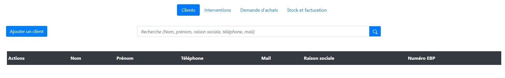
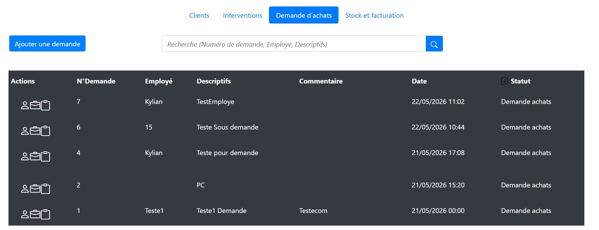
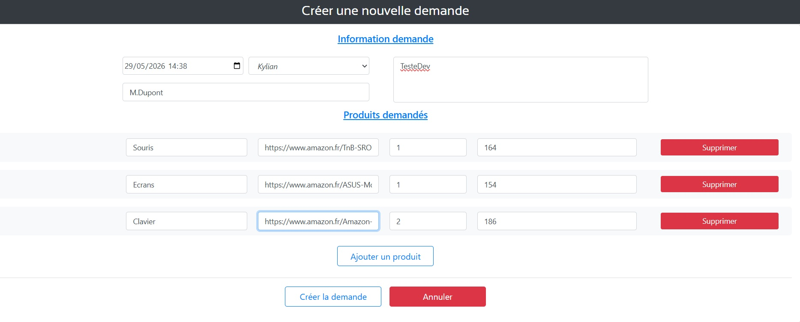
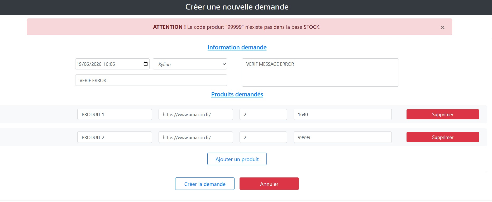
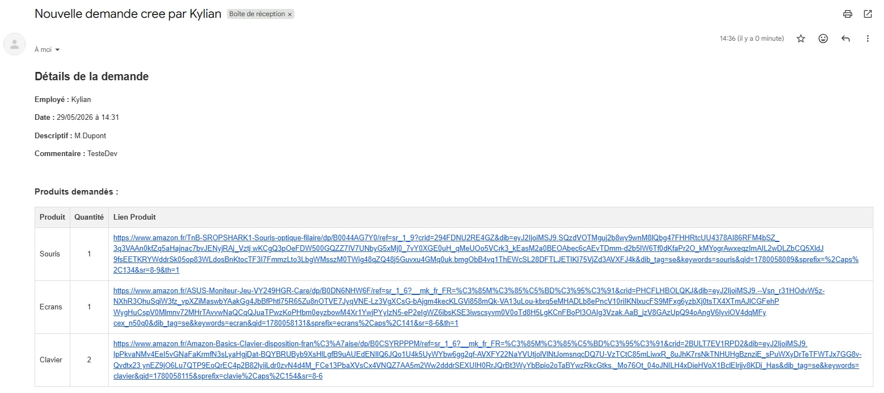
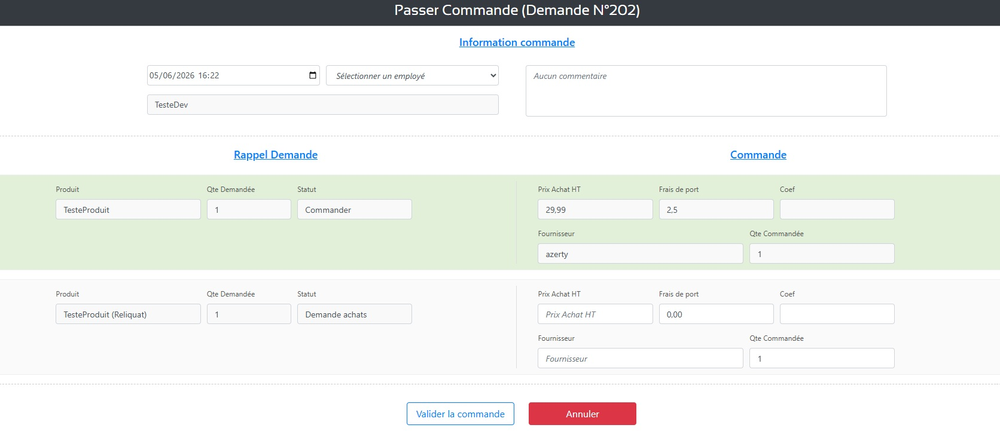
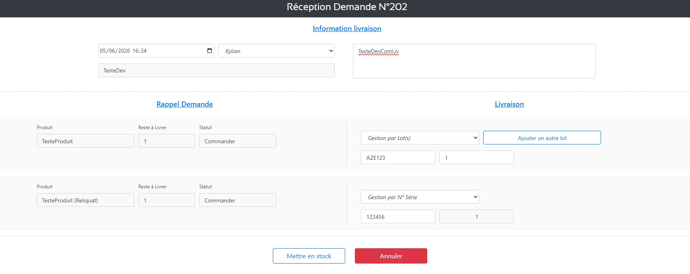
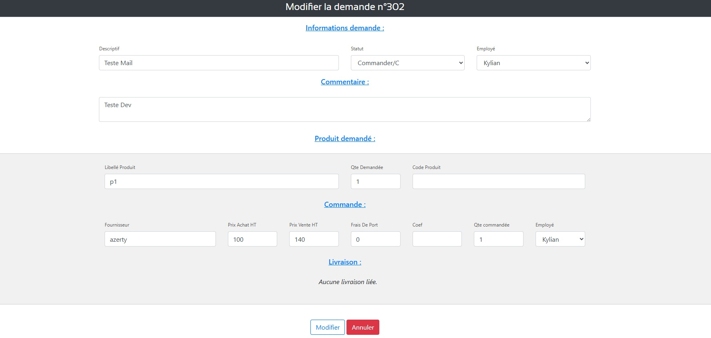

Je suis Kylian Couroussé
Nom : Kylian Couroussé
Profil : Développeur
E-mail : kyliancourousse.pro@gmail.com
Téléphone : +33 7 88 20 35 05
Compétences
À propos de moi
Je m’appelle Kylian et je me forme pour devenir développeur Full-Stack. Depuis tout petit, je suis passionné par le développement web et applicatif, et par le développement en général.
Titulaire d’un Bac Pro SN (Systèmes numériques), option RISC (Réseaux informatiques et systèmes communicants), je prépare aujourd’hui un BTS SIO (Services informatiques aux organisations), option SLAM (Solutions logicielles et applications métiers). Je me spécialise et j’en apprends un peu plus chaque jour.
Actuellement, j’approfondis mes connaissances en développement tout en m’appuyant sur de solides bases en systèmes et réseaux. Mon objectif est de continuer à développer mes compétences et d’acquérir un maximum d’expérience grâce à mes formations, afin de devenir un développeur Full-Stack compétent et polyvalent.
Mon CV
Retrouvez en un coup d’œil ma formation, mes stages et mes compétences.
Télécharger mon CV (PDF)Parcours
Voici, en résumé, mon parcours scolaire et professionnel.
Moi
Kylian Couroussé
En étude pour devenir développeur Full-Stack.
- Nantes 44300, France
- 07 88 20 35 05
- kyliancourousse.pro@gmail.com
Parcours scolaire
BTS SIO (Services informatiques aux organisations)
2025 - 2027 (En cours de formation)
Lycée Carcouët, Nantes, France
BTS SIO option SLAM (Solutions logicielles et applications métiers), j’apprends la programmation, la création d’applications (PC, mobile, web) et la gestion des bases de données.
Bac Pro SN (Systèmes numériques)
2022 - 2025
Lycée Professionnel François Arago, Nantes, France
Bac Pro SN option RISC (Réseaux informatiques et systèmes communicants), j’ai appris à installer, configurer et dépanner des équipements réseau tout en assurant leur sécurité.
Expériences professionnelles
Préparateur de commande E-commerce
2025 - Présent (job étudiant)
Super U, Ligné (44850), France
- Réceptionner et prendre en charge les commandes clients
- Prélever les produits dans les rayons et respecter les quantités demandées
- Accueillir le client lors du retrait de sa commande et lui remettre ses achats
- Respecter les règles d’hygiène, de sécurité et les délais de préparation
Développeur logiciel (stage)
Mai 2026 - Juin 2026 (7 semaines)
ISP-Conseil, Nozay (44170), France
- Développement d’une partie du CRM interne à l’entreprise
- Gestion des demandes d'achat, commande, réception et mise en stocks des produits
- Connexion aux différentes bases de données
- Gestion des droits utilisateurs (accès et rôles)
Technicien de maintenance (stage)
2022 - 2025 (6 stages de 3 à 4 semaines chacun)
Stages de seconde, de première et de terminale
- Maintenance et installation sur PC fixe, PC portable, imprimante et téléphone
- Maintenance et installation à domicile
- Gestion en autonomie des ateliers des différents magasins (première et terminale)
- Gestion et formation d’un stagiaire (terminale)
Projets
Voici les différents projets que j’ai réalisés durant ma formation et mes stages.
Développement d’un CRM
Réalisé lors de mon stage de première année de BTS, ce projet m’a permis de travailler en mode projet et de mettre en pratique les connaissances acquises en cours.
Au début du projet, j’ai réalisé un cahier des charges ainsi que des maquettes fonctionnelles, que j’ai ensuite présentés au responsable de l’entreprise. À la suite de cet entretien, j’ai commencé le développement de la solution en prenant en compte l’architecture et le code existants.
L’objectif était de développer un CRM permettant de gérer l’ensemble du processus d’achat et de gestion des produits. J’ai notamment développé plusieurs espaces : un espace permettant aux employés de créer des demandes d’achat, un espace dédié à la responsable pour passer les commandes, ainsi qu’un espace permettant aux employés de réceptionner les produits et de les mettre en stock.
Le projet comprenait également la gestion des informations relatives aux produits (libellé, prix, quantité, fournisseur, numéro de série ou de lot, etc.), tout en veillant à garantir la cohérence et l’intégrité des données en base de données. J’ai également mis en place une gestion des droits utilisateurs ainsi que des mesures de sécurité pour protéger le CRM et la base de données.
À l’issue des sept semaines de stage, j’ai livré le projet dans son intégralité, avec une solution fonctionnelle répondant aux besoins définis par l’entreprise.
















Cliquez sur une image pour l’agrandir et lire sa légende.
Certifications
Formations en ligne suivies en complément du BTS :
Quatre cours suivis pendant ma première année de BTS. Cliquez sur un cours pour afficher sa fiche.
Cybersécurité Découvrir les bases de la sécurité numérique
Descriptif : Cours d’initiation à la cybersécurité : comprendre les menaces courantes et adopter les bons réflexes pour protéger ses données et ses comptes.
Fiche de synthèse :
- Principales menaces (hameçonnage, logiciels malveillants, mots de passe faibles)
- Bonnes pratiques de protection des données et des accès
- Pourquoi ce choix : Compléter mes bases en systèmes et réseaux (Bac Pro SN) par la sécurité, qu’un développeur doit intégrer dès la conception.
- Lien avec mon projet : Dans mon CRM, j’ai mis en place une gestion des droits utilisateurs et des mesures de sécurité pour protéger l’application et la base de données.
- Lien avec ma formation : Lié à la cybersécurité des services informatiques, l’un des blocs de compétences du BTS SIO.
Développement Créer une maquette web avec Figma
Descriptif : Cours pour apprendre à concevoir la maquette d’un site web avec Figma, de la structure des pages à la mise en forme de l’interface.
Fiche de synthèse :
- Organiser une interface (pages, blocs, composants)
- Produire une maquette claire à présenter avant le développement
- Pourquoi ce choix : Le maquettage est la première étape d’un projet web et Figma est très utilisé par les équipes de développement.
- Lien avec mon projet : Pour le CRM, j’ai réalisé des maquettes fonctionnelles, présentées au responsable de l’entreprise avant de commencer le développement.
- Lien avec ma formation : Complète la conception d’applications vue en SLAM. Figma fait partie de mes compétences.
Data Intégrer l’IA générative dans son quotidien
Descriptif : Cours de découverte de l’IA générative : comprendre son fonctionnement et l’utiliser efficacement et de façon responsable.
Fiche de synthèse :
- Principes de l’IA générative et rédaction de requêtes (prompts)
- Limites et précautions : vérifier les résultats, protéger les données
- Pourquoi ce choix : Comprendre un outil devenu courant dans les métiers du développement, afin de l’utiliser avec esprit critique.
- Lien avec mon projet : Peut servir d’appui pour la documentation ou la recherche de solutions pendant un projet comme le CRM, à condition de toujours vérifier les résultats.
- Lien avec ma formation : Utile pour les recherches et la veille technologique demandées en BTS SIO.
Développement Apprendre à programmer avec JavaScript
Descriptif : Cours d’initiation à la programmation avec JavaScript, le langage du web côté navigateur. Ce cours n’est pas encore terminé.
Fiche de synthèse :
- Bases du langage (variables, conditions, boucles, fonctions)
- Suite du programme à compléter prochainement
- Pourquoi ce choix : JavaScript est indispensable pour devenir développeur Full-Stack, mon objectif.
- Lien avec mon projet : Permettra de rendre les interfaces plus dynamiques, par exemple l’ajout et la suppression de lignes produit dans le formulaire de demande d’achat du CRM.
- Lien avec ma formation : Renforce le développement web abordé en SLAM.
Descriptif : TryHackMe est une plateforme d’apprentissage de la cybersécurité par la pratique : chaque « salle » propose un cours et des exercices dans un environnement virtuel.
Badges obtenus :
Platinum League SOC Level-Up 3 Million Legend First Four
Fiche de synthèse : thèmes travaillés
- Réseau, Linux et Windows (Networking, Linux…)
- Cryptographie et attaques sur les mots de passe (CyberChef, Hydra)
- Sécurité web : OWASP Top 10, injections SQL, tests d’intrusion guidés
- Programmation Python et bases du DevSecOps
- Supervision et détection d’incidents (Splunk, Wazuh, SOC)
- Pourquoi ce choix : Compléter mes compétences en réseau et en sécurité, un domaine plutôt orienté SISR alors que je suis en SLAM, pour être plus polyvalent.
- Lien avec mon projet : Les salles sur l’OWASP Top 10 et les injections SQL m’aident à repérer les failles courantes à éviter dans une application comme mon CRM.
- Lien avec ma formation : Complète ce qui est vu en cours de SLAM, en m’appuyant sur mes bases en réseau du Bac Pro SN (option RISC).
En quoi cela me servira pour mon futur : TryHackMe est plutôt utile pour les SISR (réseau) ; étant en SLAM (développement), cela va me permettre d’acquérir des compétences en plus de celles vues en cours. Cela me sera utile pour être plus compétent dans divers domaines.
En quoi cela m’a servi durant mes études : à acquérir des compétences en réseau (qui n’est pas ma spécialisation) et en développement.


M. Tessier
Coordinateur magasin & développeur
Appréciation du stage de BTS (première année).

Mme Correc
Professeure (Bac Pro SN)
Appréciation de l’année de lycée (Bac Pro).

M. Menard
Responsable magasin & technicien
Appréciation du stage de terminale.
Contact
Vous pouvez me contacter à tout moment via :